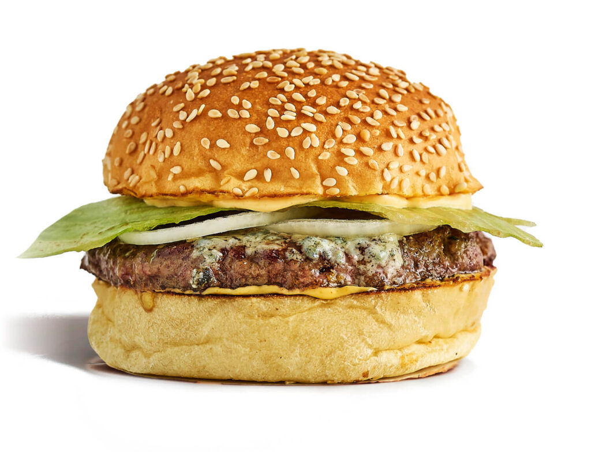

Blyovburger

DISCLAIMER: This is not a real recipe — it’s pure absurd, straight from the lyrics. Don’t cook it, just vibe it.
Ingredients
- Flaccid dick
- Opium layer made of balls
- Meadow reed
- A bit of onion
- Flour
- Walrus cock
- Weed (instead of sesame)
- Shit (instead of sauce)
- Catfish fillet (goes in the mix)
- Pattypan squash, finely sliced
- Expired cheese
Instructions (trash style)
- Gather all listed “ingredients” — dump them into one big mess.
- Mix the catfish fillet with the flaccid dick, sprinkle with flour, and top with expired cheese.
- Add weed instead of sesame and shit instead of sauce — because why not.
- No cooking needed. Just embrace the absurdity. Serve raw, nasty, and loud like the track.
Back to the main page